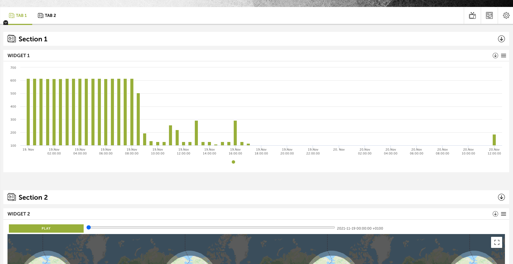
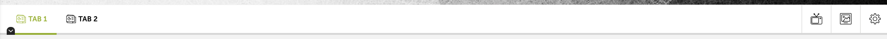
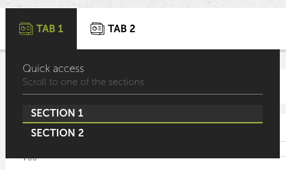
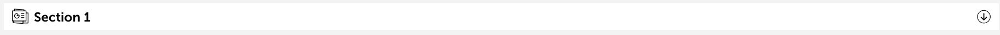
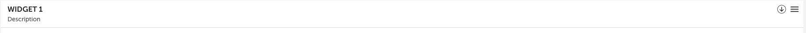
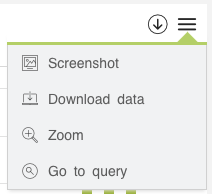

The structure of the following application is based on the default template. In the end, the applications can be customized as much as desired since its operation is based on Devo Applications Builder and Devo Applications Data Library and the design and structuring of the application could be delegated to its owner.
Next, the visual parts in which an application can be developed from the default template will be described.
General view screen
In general, an application is made up of a top bar with tabs included. Each tab is made up of sections and within each section multiple widgets. The overview of an application looks like the following image:
Top bar and taps
The top bar has certain application display controls.
On the left side there are the tabs that include the visualizations of the graphs. By default there will always be one selected. There may be as many tabs as defined within the application. In general, a tab contains a series of widgets that are related or that want to represent the necessary information in the same window.
By clicking on the down arrow indicator on each tab, a menu will be displayed with quick access to the sections included in it.
On the right side there are three options:
- The first allows you to view the application in TV mode. This is to visualize the application hiding some options to have the focus on the tab.
- The second button allows you to take a screenshot of the application according to what is currently being viewed.
- Finally, the last option shows the configuration that you have in the application. In addition to changing some visual aspects, it is possible to change the data query dates for the visualizations.
Sections
Sections are included in tabs.
Each section can have as many widgets as you want. A section consists of a header that identifies the beginning of it. On the left is the section title and on the right you have the option to collapse
Widgets
A widget is the graphical representation of the queried data. Visit the Widgets section to see the complete list of available graphics.
Each widget has a header and immediately below the graph.
The widget header has a title and a description on the left side (this needs to be added manually). And on the right side it have an option to collapse the widget and another with a drop-down with options.
The available options are:
- Screenshot: An image of the widget displayed.
- Download data: Download the data displayed in a file.
- Zoom: Display the widget in full view mode.
- Go to query: Run the widget query in the Data Search window.